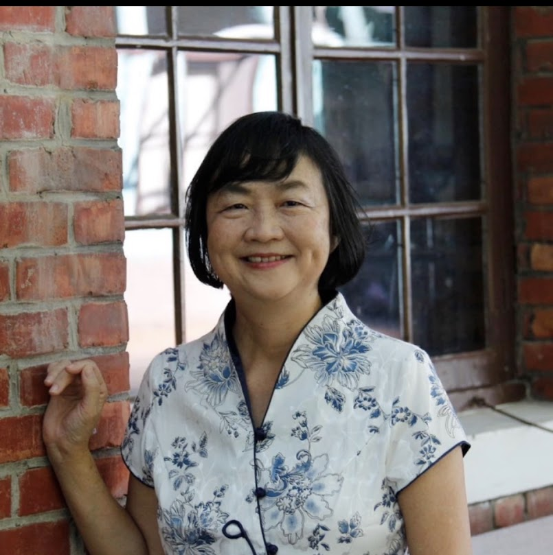

最新課程Zoom 線上・報名中
藝術靈修中的遇見真我
忙碌又充滿壓力的生活中，是否渴望能安靜沈澱，從藝術得到滋潤、舒適？
有時情緒是無法說出來的，但一張圖畫可以勝過千言萬語。這是一趟心靈之旅，透過繪畫幫助我們專注，覺察自己內在的情緒，遇見真實的自己。透過靜心練習，在塗鴉中放鬆，照顧自己的心；讓創作成為一種祈禱，也讓我們重新與自己、與上帝相遇。
不需要會畫畫。
你只需要帶著一顆願意停下來聆聽與探索的心。

帶領老師詹夢莉老師
- 上課時間
晚上 7:00–8:30- 上課方式
- Zoom 線上進行
- 招生對象
- 18 歲以上，想要照顧自己心情、探索自己、持續成長的朋友。不需任何繪畫基礎。
- 主辦單位
- 會心基督使團
PASTOR · ARTIST · SPIRITUAL COMPANION
在色彩與安靜中，
與主相遇
藝術不是少數人的才能，而是一種聆聽。透過默觀、祈禱與自由創作，讓心慢下來，重新看見生命裡愛的足跡。
詹夢莉
Maryjan
藝術家/繪本作家/宣教士
藝術靈修/藝術宣教/靈性塑造
畢業於台灣藝術大學美術系，並取得中華福音神學院聖經碩士與靈神諮商輔導碩士；曾接受台北依納爵靈修中心兩年靈修輔導培育。1984 年投入校園團契全職服事，從事青少年輔導逾三十年，也曾任國中啟聰班美術教師。
2000 年開始創作繪本，出版作品超過十本，多部作品獲獎或入圍。近年整合藝術、默觀祈禱、靈性引導與心理陪伴，在歐洲、美國及亞洲帶領超過 400 場藝術靈修工作坊，陪伴人透過圖像對話與團體分享，在愛中遇見主，也遇見真實的自己。
教學經驗
- 華神教育推廣部曾任教師，教授藝術靈修課程
- 中台神學院延伸部曾任教師，教授藝術靈修課程
學習與專業背景
- 台灣藝術大學美術系
- 中華福音神學院聖經碩士
- 靈神諮商輔導碩士
- 台北依納爵靈修中心靈修輔導培育二年
繪本創作與獲獎
- 繪本《回家》，暢談出版社出版
- 《我有一棵樹》《月亮陪我去散步》入圍信誼兒童文學獎
- 《找夢》獲耕莘文學獎繪本類優選
- 《晚餐時間》《阿公的神秘袋》獲貓頭鷹愛家繪本佳作獎
藝術與靈修的旅程
- 於華山文創參與文創展，主講心靈繪本講座。
- 受邀至英國倫敦及德國杜塞道夫舉辦心靈繪本講座。
- 於田園城市風格書店舉辦《回家》心靈繪畫展、工作坊與講座。
- 於宜蘭舉辦心靈繪畫展；受邀參與香港亞洲基督徒視覺藝術聯展並擔任顧問。
- 在歐洲、美國與亞洲各地帶領藝術靈修工作坊逾 400 場。
- 受邀於洛杉磯正道神學院舉辦《旅程》靈修畫展及藝術靈修工作坊。
讓畫紙成為一處
與愛相遇的空間
我們不追求畫得像不像，也不急著解釋。當雙手開始工作，色彩與線條會替內在發聲；我們在祈禱中觀看、聆聽，也在安全的團體裡被陪伴。
- 01
安頓
藉著呼吸與身體覺察，從忙碌回到此刻。
- 02
聆聽
以聖言、圖像或大自然為入口，留意心的感動。
- 03
創作
讓顏色、線條與形狀自由出現，不評分、不比較。
- 04
分享
在尊重與保密中說出經驗，彼此陪伴與祝福。
近期活動與展覽
點選海報可放大查看日期、地點與報名資訊。
為個人，也為同行的群體
可依教會、團契、機構與小組需要，規劃線上或實體帶領。
60–90 分鐘 · 入門
藝術靈修體驗
安頓身心、照顧情緒，透過簡單媒材經驗祈禱與創作。
半日／一日 · 團體
主題式工作坊
可聚焦「回家」、「愛中相遇」、「失落與希望」或團體當下的需要。
八週 · 深度同行
伊納爵祈禱與創作
在每週操練與個人反思中，辨識內在動態，發展更安全的人神關係。
每一幅畫，
都是一次內在旅程
創作從旅行、默觀與祈禱開始。作品不替觀看者給答案，而是邀請每一個人停留，聽見自己心裡的回聲。
啟程
回應心裡的邀請，向未知展開第一步。
同行
讓生命的聲音彼此回應，在關係中被看見。
安息
停在主的同在裡，容許心靈重新呼吸。
回家
走過轉折與尋覓，回到愛與歸屬的深處。
在創作中與主相遇
靈修畫作選作
© 詹夢莉 Maryjan｜未經授權，不得下載、重製或作商業使用。
ART COLLECTION
作品收藏與支持
部分原作開放收藏。您的收藏將支持詹夢莉牧師持續投入藝術宣教、藝術靈修創作與陪伴事工。若想了解作品尺寸、媒材、售價與寄送方式，歡迎來信洽詢。
來信洽詢收藏創作系列
- 回家 Homecoming
- 旅程 Journey
- 默觀 Contemplation
- 祈禱 Prayer
STORIES OF HOMECOMING
回家的故事
有時我們在孤單中尋找方向，有時在破碎裡等待醫治；有時以為離家很遠，卻發現愛一直在原地等候。這些真實故事，記錄學員如何透過創作、靜默禱告與自我覺察，重新遇見自己，也重新遇見主。
站內閱讀完整見證集《回家的故事：藝術靈修中的生命轉化見證》・29 頁
進入繪本心境界
在人生低谷中，她從一艘漂泊於黑夜的小船開始創作；畫面裡出現的火炬，讓她感受到上帝的引領，後來更以藝術陪伴長者。
經歷神的醫治
一段被遺忘的童年等待，在創作與禱告中重新浮現。當她邀請耶穌陪伴自己回到記憶裡，開始鬆開多年累積的憤怒與不饒恕。
新的眼光
服事中的挫折使她封閉自己；透過自然默觀、繪畫與聆聽，她逐漸從受傷的眼光，轉向看見復活、連結與新的可能。
WRITINGS & REFLECTIONS
在文字中，
繼續一段內在旅程
從忙碌回到安靜，從創作走向祈禱，也從生命故事中辨認主的陪伴。
01
安靜・獨處・相遇
相逢寧靜中
當生活忙得停不下來，我們也可能漸漸失去與自己、與主的連結。獨處不是隔絕，而是一座心靈花園，使焦慮的身心重新停泊。
閱讀文章02
召命・藝術・宣教
從畫筆到陪伴
一條從美術創作、青少年牧養到藝術靈修的路。回望其中的轉折，藝術不再只為表現技巧，而成為靠近人心、回應召命的方式。
閱讀文章03
藝術靈修・心靈陪伴
超越語言的力量
當感受難以用言語說清楚，色彩、線條與圖像能替內在發聲。藝術如何與靜默祈禱、覺察和團體分享相遇？
閱讀文章04
專訪・回家・藝術陪伴
每個人的一生都在找尋回家的路
《海外校園》專訪詹夢莉，談信仰歷程、藝術陪伴事工、繪本《回家》，以及「回家」如何成為與自己、他人和上帝重新連結的生命旅程。
來源：有盞燈／《海外校園》・2023.06.27
閱讀原文ART & COMPANIONSHIP
藝術陪伴——
超越語言的力量
詹夢莉專訪：分享藝術如何成為一種陪伴，讓難以言說的內在感受被看見，也為生命開啟理解、連結與相遇的空間。
INVITATION & COLLABORATION
如果你也渴望慢下來，
歡迎一起走一段路。
課程邀約、團體工作坊與展覽合作，歡迎透過電子郵件與我聯絡。